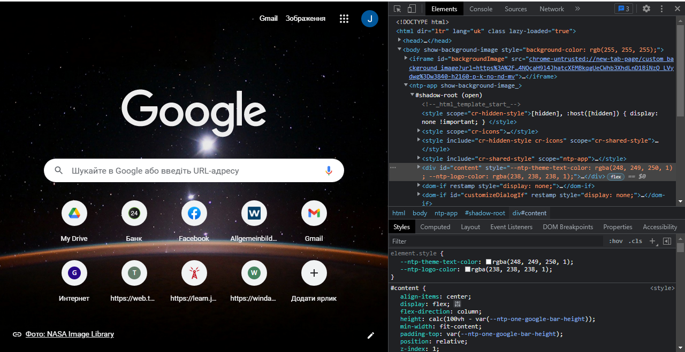

Хто такий Front-End розробник?
Frontend - це розробка користувацького інтерфейсу і функцій, які працюють на стороні клієнта веб-сайту або програми. Це все, що бачить користувач, відкриваючи веб-сторінку, і з чим він взаємодіє. Frontend-розробник співпрацює з дизайнерами, програмістами та UX-аналітиками, щоб створювати зручний і затребуваний продукт. Щоб наочно зрозуміти frontend-розробку, відкрийте сторінку будь-якого сайту - перед собою ви побачите інтерфейс. Клацнувши правою кнопкою миші, відкриєте код сторінки в браузері.
Це і є приклад роботи frontend-розробника - він скачується в браузер користувача, і його можна побачити своїми очима. Код сторінки описує кольори, верстку, шрифти, розташування графічних елементів і так далі.
Компоненти frontend-розробки
- HTML (HyperText Markup Language) - мова розмітки документів для створення структури сторінки: заголовки, абзаци, списки і так далі.
- CSS (Cascading Style Sheets) - мова для опису і стилізації зовнішнього вигляду документа. Завдяки CSS-коду браузер розуміє, як саме відображати елементи. CSS задає кольори і параметри шрифтів, визначає, як будуть розташовуватися різні блоки сайту, і так далі. Ще він дозволяє виводити один і той же документ в різних стилях, наприклад, для друку (звичайним або шрифтом Брайля), виведення передачі на екран або читання голосом.
- JavaScript - це мова, що створювалася, щоб оживити веб-сторінки. Її завдання - реагувати на дії користувача, обробляти кліки мишкою, переміщення курсора, натискання клавіш. Ще вона посилає запити на сервер і завантажує дані без перезавантаження сторінки, дозволяє вводити повідомлення і багато іншого.